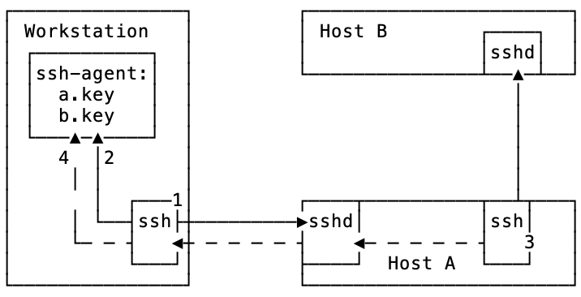
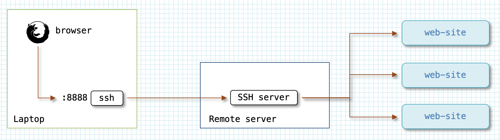
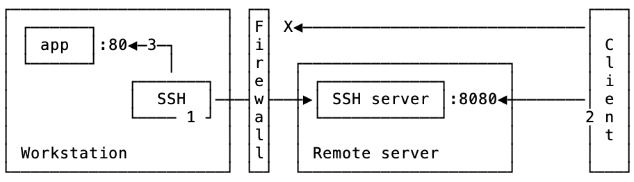
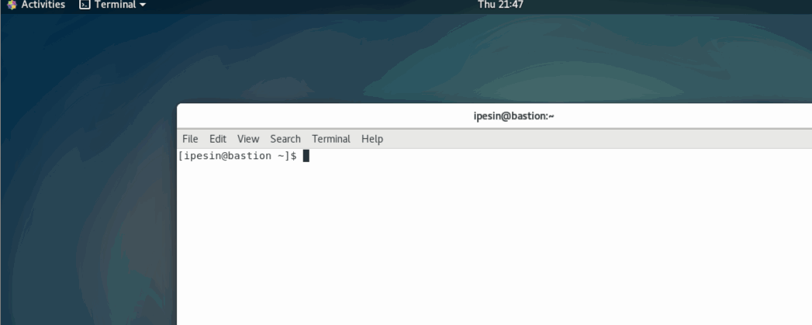
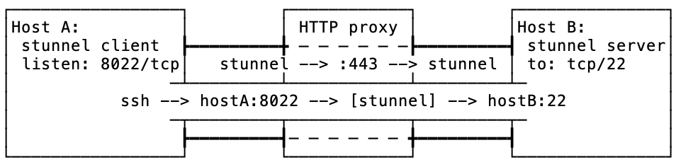
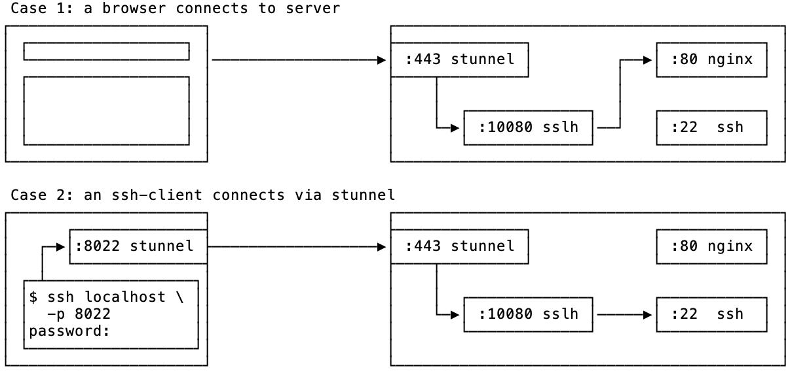
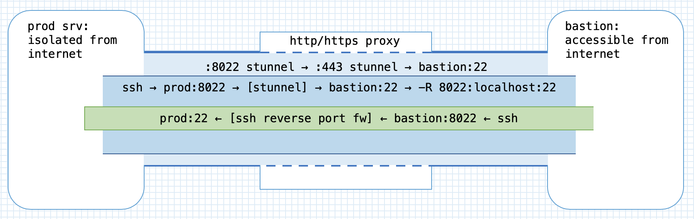
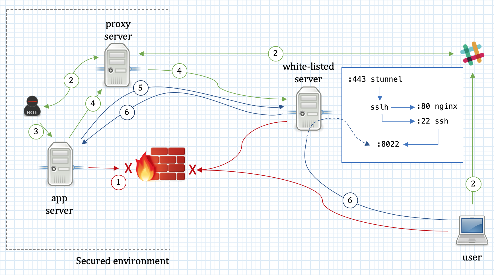

This article was inspired by the talk I gave at
Tampa Bay DevOps group on using ssh
efficiently with jump hosts, proxies, and firewalls. Both the talk, and this
article are following my experience of learning what ssh can do, how to use it
productively, and how it can be combined with other tools to solve nontrivial
tasks. At the same time, I tried to make this article useful as a reference of
approaches and solutions, both for people looking how to implement something
and to myself as a reminder. If you have time and are in the mood, you can read
it in full as a story; otherwise, just use the table of contents and jump to
the section covering your area of interest.
How it all started
My acquaintance with ssh has begun around 2000 when it started to be used as
a secure replacement for telnet — a standard way to remotely access unix
machines over the network back in the day. My view of it, just as that of its
many users, was as of a “secure telnet”, and so was the way I used it — connecting remotely to a few dozens of servers that I was supporting.
Gradually, I was learning various tricks you can do with ssh, for example,
copying directory trees with tar and scp, and redirecting GUI for X window
applications to my workstation. That was exciting, and it was contributing to my
fondness towards ssh greatly, but that wasn’t really a systematic study and
did not affect the way I perceived the tool itself.
Then, quite suddenly, I found myself in a support position that dealt with tens
of thousands of unix boxes, and my ability to use tools efficiently became
crucial for productive work. That is when my real learning of what was possible to
do with ssh began, which continues to this day and never ceases to amaze me.
Expect
One of the first things that get under your skin when you deal with hundreds of
servers daily is the need to enter the password every time you log in to a remote
machine. ssh has an immediate answer to this pain: a key-based authentication
which does not require much advertising these days.
[1]
The challenge is that when you support a really large fleet of machines that belong to separate organizational branches, it’s very often that — for various reasons — you will not be allowed to install personal ssh keys on each and every unix box. And so you are stuck with entering passwords at the prompt.
SAs are a resourceful bunch with a visceral aversion to repetitive and dull tasks. Obviously, no one wanted to type in their password, that had to adhere to security requirements of having lower and upper case letters, numbers, non-alphanumberic characters, and a minimal length,[2] literally hundreds of times every day.
Hence, someone quickly came up with a solution in the form of expect script.
expect, for those not old enough to remember, is (still is!) a Tcl extension
that lets automate interactions with text-based interfaces. At the very basic
level, expect allows you to specify what output to expect from a program, and
what input to provide in response. In our modern “DevOpsy” days, I don’t see
it much used, but back then it was a quite popular tool, especially for
establishing dial-up connections.
assh#!/usr/bin/expect -f
#
#
set timeout 30
set prompt "(%|#|\\$|%\]) $"
set HOST "[lindex $argv 0]" (1)
set USER "[lindex $argv 1]" (2)
set PASS $env(SSHPASS) (3)
if {$USER eq ""} then {
set USER $env(USER)
}
spawn ssh -o StrictHostKeyChecking=no $USER@$HOST (4)
expect {
"assword:" { (5)
send -- "$PASS\r" (6)
}
"you sure you want to continue connecting" {
send -- "yes\r"
expect "assword:"
send -- "$PASS\r"
}
}
expect -re "$prompt" (7)
interact (8)This script:
| 1 | gets the host to connect to as the first command line parameter |
| 2 | optionally, a username as the second command line parameter |
| 3 | reads the password from an environment variable |
| 4 | spawns the ssh process |
| 5 | waits for a password prompt |
| 6 | sends the password |
| 7 | waits for command line prompt |
| 8 | and then surrenders control to the user |
Now, with such script you can assign your password to a variable, and connect to hosts quickly as if you had ssh keys configured:
$ export SSHPASS; read -p "Your SSH password: " -s SSHPASS; echo Your SSH password: $ assh tb-c0 tbdemo spawn ssh -o StrictHostKeyChecking=no tbdemo@tb-c0 tbdemo@tb-c0's password: Last login: Mon Feb 18 22:20:26 2019 from bastion [tbdemo@tb-c0 ~]$
That was definitely a win! And it didn’t stop there. By modifying the script one
could easily perform mass-actions over a list of hosts. For example, if we
replace interact with something like:
send -- "uptime\r"
expect -re "$prompt"
send "exit\r"
expect eofWe then can collect the uptime statistics across many hosts.
$ for i in {0..2}; do ./uptimessh tb-c$i tbdemo; done
spawn ssh -o StrictHostKeyChecking=no tbdemo@tb-c0
tbdemo@tb-c0's password:
Last login: Mon Feb 18 22:24:25 2019 from bastion
[tbdemo@tb-c0 ~]$ uptime
22:24:34 up 21 days, 22:47, 1 user, load average: 0.15, 0.05, 0.06
[tbdemo@tb-c0 ~]$ exit
logout
Connection to tb-c0 closed.
spawn ssh -o StrictHostKeyChecking=no tbdemo@tb-c1
tbdemo@tb-c1's password:
Last login: Mon Feb 18 22:24:25 2019 from bastion
[tbdemo@tb-c1 ~]$ uptime
22:24:34 up 21 days, 22:47, 1 user, load average: 0.15, 0.05, 0.06
[tbdemo@tb-c1 ~]$ exit
logout
Connection to tb-c1 closed.
spawn ssh -o StrictHostKeyChecking=no tbdemo@tb-c2
tbdemo@tb-c2's password:
Last login: Mon Feb 18 22:24:25 2019 from bastion
[tbdemo@tb-c2 ~]$ uptime
22:24:35 up 21 days, 22:46, 1 user, load average: 0.15, 0.05, 0.06
[tbdemo@tb-c2 ~]$ exit
logout
Connection to tb-c2 closed.
$
Granted, the output is a bit messy, but you can work with it. In many cases, a
simple grep would do the trick, but for more complex cases, the awk is the
most wondrous of things:
$ for i in {0..5}; do ./uptimessh tb-c$i tbdemo; done | \
awk '/spawn ssh/{ h=$NF; sub(/\r$/,"",h) } (1)
/days/ && $3 > 20 { print h, $0 }' (2)
tbdemo@tb-c0 02:21:26 up 22 days, 2:44, 1 user, load average: 0.00, 0.01, 0.05
tbdemo@tb-c1 02:21:26 up 22 days, 2:43, 1 user, load average: 0.00, 0.01, 0.05
tbdemo@tb-c2 02:21:26 up 22 days, 2:43, 1 user, load average: 0.00, 0.01, 0.05
tbdemo@tb-c3 21:21:27 up 22 days, 2:43, 1 user, load average: 0.00, 0.01, 0.05
| 1 | Saves a hostname from the spawn ssh … output string to the variable h,
and then trims the extra \r character at the end of it. $NF — is the last
word on the line. |
| 2 | Selects lines with the word days in them, and the third word being a number
larger than 20. Prints the host name stored in the variable h and the whole
line from the input ($0). |
Surprisingly — to me back then, but not anymore — organizations with a sizeable server estate often struggle to know what is that they actually have there. Which machines have cronjobs configured, and what are they? Which servers have locally added user accounts? What are versions of web servers in production?
If there is no automated and resonably credible way to collect information off servers to answer such questions, the only alternative is to ssh in and capture files or command outputs with necessary details.
This is why it was so important to be able to automatically log in, execute
commands, and capture their output. The expect script, although far from being
perfect, allowed us to carry out quite sizable queries in an automated fashion.
sshpass
Sometime after getting used to the expect+ssh combination, the “approved”
repository for our linux boxes received the sshpass tool. This tool is a
beauty — small, simple, smart, and reliable.
sshpass is essentially a better version of the above expect script — more
reliable and easier to handle. As soon as it became available, it replaced the
expect script almost completely:
sshpass to check the time zones [3] across list of hosts.$ export SSHPASS; read -p "Your SSH password: " -s SSHPASS; echo
Your SSH password:
$ for i in {0..10}; do
sshpass -e ssh tbdemo@tb-c$i timedatectl | \
sed 's/^/tb-c'$i'/';
done | grep Time.zone
tb-c0 Time zone: UTC (UTC, +0000)
tb-c1 Time zone: UTC (UTC, +0000)
tb-c2 Time zone: UTC (UTC, +0000)
tb-c3 Time zone: EST (EST, -0500)
tb-c4 Time zone: UTC (UTC, +0000)
tb-c5 Time zone: UTC (UTC, +0000)
tb-c6 Time zone: UTC (UTC, +0000)
tb-c7 Time zone: UTC (UTC, +0000)
tb-c8 Time zone: Europe/Kiev (EET, +0200)
tb-c9 Time zone: America/Los_Angeles (PST, -0800)
tb-c10 Time zone: UTC (UTC, +0000)
The life was bright with sshpass, ssh’ing was a breeze, and I could fairly
quickly collect large sets of data and sift through it to get the information I
needed.
pdsh
As the number of systems I was supporting grew, so did the time required to
gather information or execute some command across them. Naturally, some way of
parallelizing ssh execution was in order. After initial attempts to write a
script that would loop over the list of hosts, and control the number of
processes working in the background, managing their stdout, doing error
handling, and so on and so forth, the appreciation for the amount of time
necessary to write such instrument properly descended on me. To save time, I
looked for existing tools to do this job.
The first tool I found was GNU Parallel — an amazing work of art with countless features, making it essentially a swiss-army-knife for parallelizing processes. With it you could do something like:
$ for i in {0..5}; do echo "tb-c$i"; done | \
parallel --tag -j +4 sshpass -e ssh tbdemo@{} ls -l .bash_history
tb-c5 -rw-------. 1 tbdemo tbdemo 503 Feb 19 02:35 .bash_history
tb-c1 -rw-------. 1 tbdemo tbdemo 72 Feb 19 02:35 .bash_history
tb-c2 -rw-------. 1 tbdemo tbdemo 72 Feb 19 02:35 .bash_history
tb-c4 -rw-------. 1 tbdemo tbdemo 24 Feb 19 02:35 .bash_history
tb-c0 -rw-------. 1 tbdemo tbdemo 206 Feb 19 02:35 .bash_history
tb-c3 -rw-------. 1 tbdemo tbdemo 81 Feb 18 21:35 .bash_history
I could not use the GNU parallel in my environment, though, as it was absent
from the “approved” repository of tools. A secondary concern involved the fact
that owing to its power and flexibility, parallel required spending time on
the documentation again and again, and still, it was easy to make mistakes. And
when you deal with lots of servers, you don’t want to make mistakes. So I looked
for some other tool and discovered the pdsh.
pdsh is yet another absolutely fantastic tool, which is very thoughtfully made.
You can use it to run commands in parallel over a list of hosts. In combination
with sshpass it is a tool of tremendous power:
pdsh.$ time pdsh -R exec -w tb-c[0-15] sshpass -e ssh tbdemo@%h uptime tb-c1: 04:18:15 up 22 days, 4:40, 0 users, load average: 0.63, 0.27, 0.13 tb-c14: 04:18:15 up 22 days, 4:11, 2 users, load average: 0.63, 0.27, 0.13 tb-c4: 04:18:15 up 22 days, 4:40, 0 users, load average: 0.63, 0.27, 0.13 tb-c13: 04:18:15 up 22 days, 4:11, 0 users, load average: 0.63, 0.27, 0.13 tb-c9: 20:18:15 up 22 days, 4:39, 0 users, load average: 0.63, 0.27, 0.13 tb-c12: 04:18:15 up 22 days, 4:11, 0 users, load average: 0.63, 0.27, 0.13 tb-c0: 04:18:15 up 22 days, 4:41, 0 users, load average: 0.63, 0.27, 0.13 tb-c6: 04:18:15 up 22 days, 4:39, 1 user, load average: 0.63, 0.27, 0.13 tb-c7: 04:18:15 up 22 days, 4:39, 0 users, load average: 0.63, 0.27, 0.13 tb-c10: 04:18:15 up 22 days, 4:39, 1 user, load average: 0.63, 0.27, 0.13 tb-c2: 04:18:15 up 22 days, 4:40, 0 users, load average: 0.63, 0.27, 0.13 tb-c11: 04:18:15 up 22 days, 4:11, 1 user, load average: 0.63, 0.27, 0.13 tb-c3: 23:18:15 up 22 days, 4:40, 0 users, load average: 0.63, 0.27, 0.13 tb-c5: 04:18:15 up 22 days, 4:40, 1 user, load average: 0.63, 0.27, 0.13 tb-c15: 04:18:15 up 22 days, 4:11, 0 users, load average: 0.63, 0.27, 0.13 tb-c8: 06:18:15 up 22 days, 4:39, 0 users, load average: 0.63, 0.27, 0.13 real 0m0.818s user 0m0.177s sys 0m0.140s
As you can see, pdsh automatically prepends lines with the hostname which
produced it. This makes processing the output with awk a picnic. The proper
handling of stdout and stderr allows to nicely handle cases when you need to
collect the information present only on a subset of hosts:
$ pdsh -R exec -w tb-c[0-15] sshpass -e ssh tbdemo@%h "grep -v Prod /apache/conf/tokens.conf" 2>/dev/null tb-c10: ServerTokens OS tb-c9: ServerTokens OS $
In the example above, grep on hosts which didn’t have
/apache/conf/tokens.conf generated errors like:
tb-c13: grep: /apache/conf/tokens.conf: No such file or directory pdsh@bastion: tb-c13: sshpass exited with exit code 2 tb-c11: grep: /apache/conf/tokens.conf: No such file or directory pdsh@bastion: tb-c11: sshpass exited with exit code 2 tb-c14: grep: /apache/conf/tokens.conf: No such file or directory
pdsh is smart in that it redirects to local stderr file any output that the
command it runs generated to the remote host’s stderr. This really helps a lot
in handling such output, and simple redirection as in the example can filter out
unnecessary noise.
TODO : improve example to show why scp won’t work
An interesting side-use of pdsh was an improved mass-collection of files. And
its ability to run any binary, not just ssh, allowed to use it in a very similar
way to GNU parallel:
$ pdsh -R exec -w tb-c[0-15] sshpass -e \ ssh tbdemo@%h cat /etc/passwd > passwd.combined (1) $ head -3 passwd.combined; tail -3 passwd.combined (2) tb-c2: root:x:0:0:root:/root:/bin/bash tb-c2: bin:x:1:1:bin:/bin:/sbin/nologin tb-c2: daemon:x:2:2:daemon:/sbin:/sbin/nologin tb-c9: sshd:x:74:74:Privilege-separated SSH:/var/empty/sshd:/sbin/nologin tb-c9: tbdemo:x:1000:1000::/home/tbdemo:/bin/bash tb-c9: app-agent:x:1001:1001::/home/app-agent:/bin/bash $ pdsh -N -R exec -w tb-c[0-15] \ bash -c "grep ^%h: passwd.combined | sed 's/.*: //' > %h.pass" (3) $ head -3 tb-c2.pass (4) root:x:0:0:root:/root:/bin/bash bin:x:1:1:bin:/bin:/sbin/nologin daemon:x:2:2:daemon:/sbin:/sbin/nologin
| 1 | cat /etc/passwd to standard output which is redirected into local file
passwd.combined |
| 2 | pdsh prepends each line with the hostname that generated them |
| 3 | pdsh runs grep processes for each hostname (%h) in parallel, the
output is piped into sed that removes the hostname prefix, and the output is
saved into local file with the name of the hostname from which the data was
collected and extension .pass |
| 4 | resulting files have the content of the files on respective hosts |
Jump hosts
As time passed, I became more involved in support of systems with elevated security requirements. The use of bastion or jump hosts for such environments became wide-spread and that was getting in the way of my automated scripts that had to directly log in to servers.
Technically, this isn’t a big deal. Just as we can use ssh to run any odd
command on a remote box, we can use it to run another ssh process:
ssh tbdemo@tb-c1 uptime ssh -t tbdemo@tb-c1 ssh tb-c2
we need to use -t option in the second case to force tty allocation for
the command ssh runs remotely — another ssh as it happens. By default,
ssh does not allocate tty if it used to invoke a remote command. The terminal,
however, is required for programs that interact with a user.
|
There are a couple of issues with such an approach, however. The obvious first
issue is that you are being asked for a password twice. You can use sshpass to
respond to the first prompt, but you are stuck with the second. The second issue
is that a jump host can use two-factor authentication (2FA), making it
impossible to automate even the first password prompt. And this is when things
became interesting.
Connection multiplexing
How could the problem with 2FA be solved? This time I had to really start digging
into ssh documentation. I learnt about connection multiplexing that ssh
supports. Turns out, once you establish your first ssh connection to a host, you
can reuse this connection for the all subsequent ssh connections to that same
host. And because the connection is already authenticated, you will not be asked
for the password again!
This is a perfect solution to logging in to 2FA-enabled jump hosts: establish one connection to it, pass the authentication, and leave it running in the background. Reuse that connection for all new ssh connections to the same jump host.
# terminal session 1 $ ssh -t bastion -M -S /tmp/cm1 (1) tbdemo@bastion's password: Last login: Wed Feb 20 15:20:17 2019 from laptop [tbdemo@bastion ~]$ # terminal session 2 $ ssh -t bastion -S /tmp/cm1 (2) Last login: Wed Feb 20 15:39:43 2019 from laptop [tbdemo@bastion ~]$ logout Shared connection to bastion.rewcons.net closed. $ ssh -t bastion -S /tmp/cm1 ssh tbdemo@tb-c0 (3) tbdemo@tb-c0's password:
| 1 | In one terminal window, we establish the main connection and pass the
authentication. -M designates the connection as the master connection, and -S
specifies the location of a socket that can be used by the ensuing ssh
commands to reuse this connection. |
| 2 | In the other terminal window, we run ssh to the same host reusing the main
connection by specifying the socket file with -S option. As a result, we get
the shell on bastion host without providing a password or a passcode (for 2FA). |
| 3 | Now we can run ssh … ssh … to first get on a bastion host and
then connect to any host behind it. |
Moreover, we can even avoid remembering and using -M and -S options all the
time by adding them to the default ssh configuration for all or a group of
hosts. This can be done by creating an entry in ~/.ssh/config like this:
~/.ssh/configHost * ControlMaster auto ControlPath ~/.ssh/cm-%C
In the above example, we enable connection multiplexing and specify that the
socket files should be created in ~/.ssh/ directory. %C is substituted with a
hash of a string that consists of local and remote hostnames, destination port,
and remote username. This way, you get a new socket for each new connection to a
different host, or with a different username.
|
The older versions of ControlPath ~/.ssh/cm-%r@%h:%p There is also another interesting option that can be added to this block: ControlPersist 10m This option tells |
Furthermore, to avoid keeping a terminal occupied by the initial ssh connection that we need for authentication, or accidentally closing it, we can run it in the background, leaving it there doing nothing:
laptop$ ssh -f -N bastion tbdemo@bastion's password: laptop$
The ssh process started and asked for the password, and upon authenticating
went into the background as was directed by -f option. -N option tells ssh
not to execute any remote command, just maintain the connection.
Now this is wonderful! An ordinary ssh command would take the advantage of an existing
connection, and ask for a password just once, when it connects to a host
behind the jump host. Surely, we then could use sshpass to supply password like this:
$ sshpass -e ssh -t bastion ssh tbdemo@tb-c0 tbdemo@tb-c0's password:
To my chagrin, I discovered that this trick doesn’t work, and I was still getting a password prompt. The reason appeared to be that:
sshuses a direct tty access to make sure that the password is indeed issued by an interactive keyboard user.sshpassrunssshin a dedicated tty, fooling it into thinking it is getting the password from an interactive user.
So, in my naive attempt above, sshpass fools the first ssh process, which
is the ssh to bastion host, whereas the second ssh, which is the one asking for
a password, is not handled by sshpass.
ProxyCommand
Okay, so how do we deal with that password prompt coming from the second ssh
command? We can surely revive the expect script and modify it accordingly. But
we have got this far not to turn back to where we once were. Instead, we need
that the ssh process we run on our local machine was the one asking for the
password to the final destination host.
The ssh has an interesting option called ProxyCommand which specifies the
command to use to connect to the server on a TCP level and provide network
transport for ssh. If we can somehow establish a TCP connection between a
workstation and destination server over the jump host, we can then tell ssh to
use it. When it comes to establishing connections between hosts, the standard
unix toolbox has an outstanding utility for that — netcat.
Netcat can establish a tcp connection to ssh port on a remote host, and tie
it to stdin/stdout of a process that invoked it. We can’t connect directly
through to the host behind a jump host, right? But we can use ssh to connect
to jump host and execute netcat (nc) there:
$ ssh bastion nc tb-c5 22 SSH-2.0-OpenSSH_7.4
This command is effectively establishing a TCP connection between the source and
destination hosts via a jump host. All that is left is to tell another ssh to use
this connection:
$ sshpass -e ssh -oProxyCommand="ssh bastion nc %h %p" tbdemo@tb-c0 Last login: Wed Feb 20 15:41:15 2019 from bastion [tbdemo@tb-c0 ~]$
Here, ssh bastion nc %h %p uses a previously established multiplexed
connection to connect to a jump host without asking for a password, and then
executes nc to connect to the destination host. %h and %p inside
ProxyCommand option are substituted with the hostname and port from the parent
ssh command, in our example tb-c0 and 22 (default).
Once this is done, the parent (leftmost) ssh command uses the stdin/stdout of
the proxy command, to talk directly to the destination host that sits behind the
jump host! Next, it will negotiate a connection, and ask us for the password. But
since it is the ssh process that runs on a source machine that asks for a
password, the sshpass can detect this and supply the password from the
environment variable defined previously.
To avoid specifying ProxyCommand as a parameter on a command line, we can
again turn to ssh configuration file, and direct the group of hosts which
require jumping to use it automatically:
~/.ssh/configHost tb-c*
ProxyCommand ssh bastion nc %h %p
With this setup we now can:
-
automatically login and execute commands on remote hosts which require password-based authentication;
-
transparently connect to hosts via a jump host;
-
accommodate situations when the credentials to a jump host differ from those for hosts sitting behind it;
-
even accommodate jump hosts that require 2FA/OTP authentication.
As a result, we can use pdsh again to run commands across many hosts:
$ pdsh -f 8 -R exec -w tb-c[0-15] \ sshpass -e ssh tbdemo@%h /sbin/ip addr ls dev eth0 | grep 'inet ' tb-c5: inet 192.168.120.179/24 brd 192.168.120.255 scope global dynamic eth0 tb-c6: inet 192.168.120.156/24 brd 192.168.120.255 scope global dynamic eth0 tb-c1: inet 192.168.120.162/24 brd 192.168.120.255 scope global dynamic eth0 ...snip... tb-c13: inet 192.168.120.172/24 brd 192.168.120.255 scope global dynamic eth0 tb-c14: inet 192.168.120.191/24 brd 192.168.120.255 scope global dynamic eth0 tb-c15: inet 192.168.120.101/24 brd 192.168.120.255 scope global dynamiceth0
|
When using multiplexed connections, you need to keep in mind that there
might be a limit on how many connections can be multiplexed into a single master
connection. This is controlled by For this reason, the |
Once again my life was bright, and I could access and run commands across hundreds of servers in a very efficient manner, yay!
The combination of ssh and netcat proved to be so convenient and widely
used, that in OpenSSH 5.4 a native implementation was added that didn’t
require netcat to be installed. All you had to do was to use -W option, so
instead of
ProxyCommand ssh bastion nc %h %p
you had to specify
ProxyCommand ssh bastion -W %h:%p
with exactly the same result.
As configurations with jump hosts proliferated, the use of them has been further
simplified in OpenSSH 7.3 by an addition of -J command line parameter and
ProxyJump configuration file option. With it, the necessary incantation for
jumping became simply ProxyJump bastion, nothing more.
The new -J parameter has a neat feature worthy particular mentioning. If you
have not just one, but a chain of jump hosts, earlier you had to specify
ProxyCommand for each jump host and it was getting messy. With -J you can
simply specify them over a comma, like so:
ssh -J user1@jumphost1,user2@jumphost2 user@dsthost
Very convenient.
Paradigm change
Working with a large fleet of machines means that often you need to move information between servers. It can be files, scripts, some other bits and pieces. One of the first commands that I have learnt of this ilk was:
tar czf - /home/user/stuff | ssh tbdemo@tb-c5 'tar xzvf - -C /home/user'
This command moves a directory tree with files from one host to another. On the
machine you are logged in you run tar that produces a zipped tarball to its
stdout, which is piped to stdin of an ssh process. Ssh
connects to the target host and passes own stdin to stdin of a command it
spawns remotely, which in our case is tar. Finally, tar reads stdin
and unpacks it to /home/user.
Notice how v option is missing in tar command that packs the
archive and present in tar that unpacks. This avoids duplicating output and
also let us know which file has been transferred to the destination host.
|
The tar command from the example is usually much faster for transferring
directory trees than scp -r, especially if there are a lot of small files.
Another caveat is that scp follows symlinks on a recursive copy, and that often
is undesirable; tar on the other hand preserves the links, as you would
usually expect.
|
|
Combination of ssh tbdemo@tb-c5 'tar czf - /home/user/stuff' | tar xzvf - -C /home/user Here, we first ssh into a remote system and run |
Once you start using pipes and redirection with ssh it becomes your second
nature. Need to append a local file with a file from a remote box?
ssh tb-c5 'cat /etc/passwd' >> passwd.tb-c5
Backup a database, gzip it, and store it on a remote host, all of that without using disk space on the database server?
mysqldump --all-databases | gzip -c | ssh tb-c13 'cat - > /var/dumps/dump.sql'
Check what is recorded in mp3 file on a server?
ssh tbdemo-ext 'cat ~/music.mp3' | mpg123 -
Execute a script that you have locally without copying it to the remote server? This is useful when you need to run it across many servers, or if the command you want to execute becomes too complex for a one-liner:
ssh tbdemo-ext 'bash -s' < localscript.sh
Or maybe debug HTTP traffic on a server with whireshark installed on your
workstation:
ssh -t tbdemo-ext sudo tcpdump -i eth0 -U -s0 -w - 'port 80' | \ /Applications/Wireshark.app/Contents/Resources/bin/wireshark -k -i -
At some point, I realised that such commands really let me connect processes
that run on separate hosts in the very same manner as I do it when dealing
with processes running on the same host. In other words, ssh let me create
process pipes that worked across the network! This is when ssh stopped being
a “remote shell” to me, and became a “network interprocess pipe”.
ssh keys
The majority of ssh users know about ssh keys. You generate a pair, upload the
public key to the server, and then either by specifying the private key on
command line, or by using ssh-agent you can connect to the destination server
without typing in a password.
authorized_keys options
Not everyone knows, though, that there are configuration options that can be
specified in authorized_keys file to limit who can use this key, and what can
be done while using it.
Such options are specified in front of the public key line in authorized_keys
file. The most useful options to me are:
-
command="uptime"— defines which command is executed for a connection with corresponding key. Only one command is allowed, so if you need a user to be able to run a set of commands, either a key per command has to be created, or a simple shell wrapper needs to be written and used with this option. -
from="*.acme.com,!gw.acme.com"— specifies a list of DNS name or IP patterns the key can be used from. -
expiry-time="20190101"— limits the date till which this key is accepted. This requires OpenSSH version7.7, and the user should not be able to modify the keys file, usually because this is used in conjunction withcommand=option.
command= option for the ssh keybastion$ sed -i '1s/^/command="uptime" /' ~/.ssh/authorized_keys laptop$ ssh bastion 18:26:27 up 44 days, 19:45, 5 users, load average: 1.71, 1.45, 0.85 Connection to bastion closed. laptop$ ssh bastion 'ls /' 18:26:48 up 44 days, 19:45, 4 users, load average: 1.72, 1.47, 0.87 bastion$ sed -i '1s/command="uptime" //' ~/.ssh/authorized_keys laptop$ ssh bastion 'ls /' bin boot dev etc ... laptop$ ssh bastion Last login: Wed Mar 13 18:26:27 2019 from 173.170.151.234 bastion$
There are more options supported, for more details check AUTHORIZED_KEYS FILE
FORMAT section of
sshd man page.
|
Restoring public key, and checking if public key matches the private.
If you lost the public key of the pair, it is not a big deal. It can easily be restored with the following command: $ ssh-keygen -yf my-private.key > my-private.key.pub If you have a public key and want to check if it matches a private, this can be done with: $ diff -q <(ssh-keygen -yef my-private.key) <(ssh-keygen -yef my-private.key.pub) |
Identity forwarding
There are situations when you need to do something on a remote server with your private ssh keys. For example, you might use a jumphost which requires a different key than the destination host. Or you might need to pull a repository from github for deployment using your personal ssh keys.
Copying and leaving the keys to the remote server might not the best way to
handle such situations. ssh supports a better way to feature called Agent
Forwarding. Agent is a daemon that holds ssh keys and allows clients to verify
them. You can tell ssh to forward verification requests from a remote system
to your workstation where you keep private keys and run ssh-agent.
TODO : Improve description, single key is enough.
Let’s look at a diagram how this works:

-
sshis used to connect to Host A. The ssh server is challenging the key, and the ssh process on workstation connects tossh-agentto solve the challenge. -
As
ssh-agenthas the correct key for host A, the connection succeeds. -
The user connects to Host B from Host A. Host B requires a key that is missing on host A.
-
The connection between workstation and host A is used to connect to
ssh-agentrunning on workstation, and verify the key for host B.
For this process to work, ssh connection between workstation and host A has to
allow Agent Forwarding. This can be achived by specifying -A switch to
ssh when connecting to host A.
Certificates
Even less know is the fact that ssh supports certificate-based authentication. SSH identity certificates are very useful when you manage a large fleet of servers. The present of Certificate Authority (CA) mean that you do not need to distribute keys for people across the servers. The ssh client will present to a server with a signed personal certificate which can be validated with CA certificate, confirming user’s credentials without keeping public keys on servers.
The access revocation becomes easier too; ssh server supports Key Revocation Lists (KRL) which allow to manage centrally the list of revoked certificates.
Port forwarding
If we think about ssh as a “network interprocess pipe”, it is natural to
imagine that we can use it to route any data via any hosts that we have access
to. This can be convenient in many instances, for example when we want to test
connectivity to a service from different places around the world, or pretend
that we are connecting to a web-site from some other country than we are in at
the moment.
Recently, I visited my home country Ukraine, and spent there about a month.
Naturally, at some point a had to pay the utilities bills for my apartment in
Florida. Alas, the electric utility site was not opening from Ukraine! I
suspect, this was another “smart security measure”. Using ssh I quickly
created a way for my browser to use an ssh connection to a DigitalOcean server
in the US, and pretend it was now accessing the website from the US IP address.
How did I do this?
SOCKS (aka Dynamic Port Forwarding)
ssh has a built-in SOCKS proxy server. SOCKS is a protocol that allows to pass
traffic between two hosts via a proxy server. Client applications need to
support this protocol to be able to use SOCKS proxy. Thankfully, all major
web-browsers implement such support.

To establish a local SOCKS proxy, you need to use -D <port> option. It is
convenient to combine it with -N -f to make ssh go into background after
authentication.
$ ssh tbdemo-ext -D 8888 -Nf (1) $ curl -s http://ifconfig.co/ http://ifconfig.co/country (2) 173.170.151.xxx United States $ curl -x socks4://localhost:8888 -s http://ifconfig.co/ \ (3) http://ifconfig.co/country 46.101.106.xxx Germany
| 1 | Connect with ssh to a server in Germany and set up SOCKS proxy server
on client machine’s port 8888 that will route the traffic via server ssh is
connected to. |
| 2 | Use curl to see which IP and country we appear from when connecting to a
web server without proxy. |
| 3 | Tell curl to use SOCKS proxy server we have created in step 1, and check
which IP and country we appear from when using curl |
As you can see, when we use the proxy the web server thinks we are coming from
Germany, which is where the tbdemo-ext is located.
One of the key differences for a user between SOCKS4 and SOCKS5 is that
with the latter, you can delegate DNS name resolution to the proxying server. It
might be convenient if your local firewall blocks external DNS servers. Web
browsers usually have an option in Proxy Settings dialog akin to Proxy DNS
when using SOCKS v5 to use SOCKS proxy for name resolution.
|
The SOCKS proxy that ssh creates is not necessarily limited to the machine
where it runs. It is a default behaviour if no IP address is specified, but it
can be easily overriden by prepending port with a colon:
ssh tbdemo-ext -D :8888 -Nf
This is a shortcut for specifying a *:8888 to bind and listen to all network
interfaces; alternatively, you can explicitly specify the network interface IP
address you want the SOCKS proxy to listen on.
Local port forwarding
As you have seen, dynamic proxying is a handy feature, but requires the client
application to support SOCKS protocol. Unfortunatelly, vast majority of tools
will not support it. There are some tools that attempt to implement a
transparent wrapper around programs and redirect all their network connections
through a SOCKS server, for example proxychains. Such wrappers, however, bear
not insignificant limitations; they require the programs to be dynamically
linked, with the same linker as the tool itself.
ssh provides a functionality that allows to transparently forward traffic of
applications that don’t support proxy servers (or if you do not want to pass
their traffic via a proxy). First, let’s explore Local port forwarding.
Local port forwarding allows to designate a port, or a set of ports, on the same host where ssh is executed, and bind them to some destination host, passing the traffic via possibly another host to which ssh connection is established.
┌────────────────────────────┐ ┌─┐ ┌──────────────────┐ ┌──────────────────┐ │ ┌───────────┐ │ │F│ │ │ │ │ │ │ app │──────────────┼>X│i│ │ │ │ │ │ └───────────┘ │ │r│ │ │ │ │ │ │ ┌───────┐ │ │e│ │ ┌────────────┐ │ │ ┌────────────┐│ │ └───>:8025 │ SSH │─┼──┤w├──┼─>│ SSH server │──┼──┼>:25│Mail server ││ │ └───────┘ │ │a│ │ └────────────┘ │ │ └────────────┘│ │ │ │l│ │ │ │ │ │ Workstation │ │l│ │ Remote server │ │ Mail server │ └────────────────────────────┘ └─┘ └──────────────────┘ └──────────────────┘
In the example, the workstation is behind a firewall which does not allow it
to connect on port 25 directly. The firewall permits ssh connections to an
external server, though. In this case, we can use ssh to set up local port
forwarding and reach a specific mailserver on port 25 via external server. To
do it, we only need to run the following command:
$ ssh remote-server -L 8025:mail-server:25 -Nf
This command connects to remote-server, starts listening on workstation’s port
8025, and forward all connections to that port via ssh connection to
remote-server, to mail-server port 25.
Couple of things to remember:
-
The connection is encrypted only between ssh client and
remote-server. Traffic between local app and the ssh client, as well as betweenremote-serverandmail-serveris using the application protocol which might or might not be encrypted. -
By default, ssh client listens for connections on
localhostonly! It is possible, however, to expose port to the network you need to enableGatewayPortsoption on ssh client:$ ssh -oGatewayPorts=yes remote-server -L 8025:mail-server:25 -nF
Now, ssh will listen on port 8025 on all network interfaces, so that a host that is able to connect to workstation, can use this port to reach
mail-server:25 -
You can specify multiple ports to be forwarded with single ssh connection:
$ ssh remote-server -L 8025:mail-server:25 -L 8080:localhost:80 -Nf
-
It is possible to use port forwarding with JumpHosts:
$ ssh -J jumphost1,jumphost2 remote-server -L 8080:localhost:80 -Nf
A very common scenario where Local port forwarding is used is to gain access to a service running on a remote server which is not available via direct connection, because say it is running behind a corporate firewall. In this case, if you can ssh in to a machine that is on the network behind the firewall, then all you have to do is:
$ ssh -Nf remote-machine -L 3389:internal-server:3389
Now, by running rdesktop to localhost:3389, you can connect to a windows
machine behind the firewall running a remote desktop service.
Similarly, this approach is used to secure access over insecure protocols. For example, VNC protocol is not encrypted. As a best practice, VNC service is configured on, and allows access from, localhost interface only. In order to connect to it remotely, a user need to set up port forwarding with:
$ ssh -Nf vnc-server -L 5901:localhost:5901
And then use localhost:5901 as the destination address for VNC client. The
traffic gets routed via ssh connection to vnc-server, where it is forwarded to
localhost:5901 where VNC service is listening for connections.
Remote port forwarding
Local port forwarding allows to create so to speak “outbound” connections. They are useful when you want to reach something that is hidden behind a firewall, or runs on remote machine’s localhost inteface.
ssh can also create a reverse configurtion, where you connect to remote host
and bind a port on a remote machine to a local host. This can be confusing at
first because the forwarding happens in the opposite direction than the ssh
connection. Here is an example command:
workstation$ ssh remote-server -R 8080:localhost:80 -Nf
Now let’s look at a diagram of what it does:

-
First, an ssh connection is established from
workstationtoremote-serverwhere a port is opened in listening mode. -
An application connects to the port
8080onremote-server, and is getting proxied via ssh connection toworkstation -
sshroutes this connection to application port80
|
By default |
If GatewayPorts is enabled, then you can expose a service running on your
workstation (or even network) to the remote server’s network by using the
external IP address:
workstation$ ssh remote-server -R 8080:12.23.34.45:80 -Nf
|
It is not necessary to execute new $ ~C
ssh> help
Commands:
-L[bind_address:]port:host:hostport Request local forward
-R[bind_address:]port:host:hostport Request remote forward
-D[bind_address:]port Request dynamic forward
-KL[bind_address:]port Cancel local forward
-KR[bind_address:]port Cancel remote forward
-KD[bind_address:]port Cancel dynamic forward
Sometime you need to see if a certain web-resource is available from a server, and a quick way you can do this is by configuring dynamic forward, and directing your workstation’s browser to use it. All you need to do is enter the following two commands, while in ssh-session: $ ~C ssh> -D8888 It is also worth mentioning an escape-command that terminates ssh connection:
|
TODO : Remote + local fw for home-based window laptop
|
It is easy to confuse ssh srv {-L|-R} [addr1:]port1:addr2:port2
------- ------------- -----------
side tunnel specification
In the tunnel specification, the direction is always source → destination, i.e. from where to where the traffic is forwarded. Side specifies the starting point for the tunnel — Local or Remote (for network old-timers can also be Left and Right). If I need to forward Local port to remote machine, this means I need to
specify |
X11 forwarding
Talking of forwarding, I cannot avoid mentioning ssh ability to forward X11
sessions. This means two things:
-
You can use
sshto run X-window applications on hosts that do not have X server running. By using X11 forwarding, the application on destination host will use X server on your desktop to render the UI. The execution nevertheless will be happening on the remote server. -
Native X11 sessions are not encrypted, running them over the network is insecure. By using
sshto forward such sessions you ensure the security of information in-flight.
To enable X11 forwarding, you just need to specify -X option on the command
line. In the example below, I connect from a host that has X server (bastion)
to a host that doesn’t (tb-c14). Then I run a program on tb-c14 that
requires X-server, and because I used the option -X, the application connects
to X-server on bastion and displays the UI there.

I remember one time I needed to install Oracle on a linux server remotely. Back
then, Oracle installer for Linux only supported the GUI mode installation.
Thanks to ssh I redirected X11 session from the server to my linux laptop and
performed the installation.
SSH VPNs
Okay, we discussed how to forward a port, or a set of ports of one host to another. How about the situations where we actually need something like VPN? For example if we want to connect to a network that is hidden behind a bastion host? Or if we want to connect two networks at different datacenters?
tunnel
Again, ssh can do this for you. You can request ssh to create tun devices
on machines between which the connection is established, and then use standard
linux networking tools to configure a tunnel between machines.
To do this, you need to use -w option that specifies the number on tun
device on local and remote machines:
[root@tb-c11 ~]# ssh -w 0:0 tbdemo-ext -Nf
[root@tb-c11 ~]# ip l l dev tun0
6: tun0: <POINTOPOINT,MULTICAST,NOARP> mtu 1500 qdisc noop state DOWN mode DEFAULT group default qlen 500
link/none
[root@tb-c11 ~]# ssh tbdemo-ext ip l l dev tun0
7: tun0: <POINTOPOINT,MULTICAST,NOARP> mtu 1500 qdisc noop state DOWN mode DEFAULT group default qlen 500
link/none
As soon as we established ssh connection, tun0 device appears on both
machines. Now, the only thing left is to configure IP addresses on tun0 from
both ends:
[root@tb-c11 ~]# ip link set tun0 up; ip addr add 10.0.0.200/32 peer 10.0.0.100 dev tun0 [root@tb-c11 ~]# ssh tbdemo-ext "ip link set tun0 up; ip addr add 10.0.0.100/32 peer 10.0.0.200 dev tun0" [root@tb-c11 ~]# ping -c 2 10.0.0.200 PING 10.0.0.200 (10.0.0.200) 56(84) bytes of data. 64 bytes from 10.0.0.200: icmp_seq=1 ttl=64 time=0.039 ms 64 bytes from 10.0.0.200: icmp_seq=2 ttl=64 time=0.053 ms --- 10.0.0.200 ping statistics --- 2 packets transmitted, 2 received, 0% packet loss, time 999ms rtt min/avg/max/mdev = 0.039/0.046/0.053/0.007 ms [root@tb-c11 ~]# ping -c 2 10.0.0.100 PING 10.0.0.100 (10.0.0.100) 56(84) bytes of data. 64 bytes from 10.0.0.100: icmp_seq=1 ttl=64 time=104 ms 64 bytes from 10.0.0.100: icmp_seq=2 ttl=64 time=104 ms --- 10.0.0.100 ping statistics --- 2 packets transmitted, 2 received, 0% packet loss, time 1001ms rtt min/avg/max/mdev = 104.374/104.413/104.452/0.039 ms [root@tb-c11 ~]#
That’s it! We now have a tunnel encrypted with ssh between two hosts. If we want to let the outside host access to internal network, we can add routing and optionally NAT’ing:
[root@tb-c11 ~]# iptables -t nat -A POSTROUTING -o eth0 -j MASQUERADE [root@tbdemo-ext ~]# ip ro add 192.168.120.0/24 via 10.0.0.200 [root@tbdemo-ext ~]# ping -c 2 192.168.120.21 PING 192.168.120.21 (192.168.120.21) 56(84) bytes of data. 64 bytes from 192.168.120.21: icmp_seq=1 ttl=63 time=104 ms 64 bytes from 192.168.120.21: icmp_seq=2 ttl=63 time=104 ms --- 192.168.120.21 ping statistics --- 2 packets transmitted, 2 received, 0% packet loss, time 1001ms rtt min/avg/max/mdev = 104.638/104.702/104.766/0.064 ms
This really seems to be a quick and easy way to setup a VPN. However, you don’t see it used widely, and that is because it has a number of considerable downsides:
-
The
rootaccess is required on both hosts. Moreover, you need to be able to login remotely asroot, which is a potential security issue. -
You need to enable
PermitTunnelsshd configuration option on both hosts, which is disabled by default. -
In effect, this setup builds a TCP-over-TCP tunnel, which is a bad practice™. In particular, it doubles the protocol overhead, and performs horribly on high latency connections, or if there is a packet loss present.
sshuttle
What can we do then, if we don’t have the root access on the destination host?
Also is there any way to make TCP-over-TCP problem go away? Well, again the
answer is yes.
There is an ingenious tool sshuttle that can help with this. sshuttle
implements quite a complex mechanics to achieve the end goal, but it is extremly
simple to use. All you need to do is:
$ sshuttle -r bastion 192.168.120.0/24
----------| |-------------------------------------------
remote host| |networks to be forwarded via ssh connection
It requires root access on the originating host, but since it’s usually your
laptop or desktop, it is not a problem. Once it establishes connection, it
starts intercepting tcp traffic, and reconstructs data for all connections that
should go via ssh connection. This allows sshuttle to send raw data via
connection, avoiding TCP-over-TCP problem. At the other end, a component
reconstructs tcp connections from the datastream.
It is amazing how such a complex tool is so easy to use! As an additional
benefit, sshuttle supports forwarding DNS requests via the connection, and you
can use internal DNS names instead of figuring out the IP addresses.
$ # this is macos $ nc -zG 2 192.168.120.21 22 nc: connectx to 192.168.120.21 port 22 (tcp) failed: Operation timed out $ sshuttle -Dr bastion 192.168.120.0/24 $ nc -zG 2 192.168.120.21 22 Connection to 192.168.120.21 port 22 [tcp/ssh] succeeded!
sshuttle only supports TCP connections! ping and tools that use
UDP will not be able to use connection created by sshuttle.
|
HTTP proxies
Sometimes you find your machines inside a secured (or “secured”) environments where access to external servers — not only via ssh — is limited, or blocked. The usual practice there is to use HTTP proxy server to get access either unfettered, or to a whitelisted addresses.
In situations like these, it is useful to know that ssh can, with the help of few tools, work via HTTP proxies.
corkscrew
The support of secure HTTPS connections via proxy is implemented using CONNECT
command, which essentially establishes direct connection between client
requesting the connection, and the destination server via proxy server. This is
very similar to what we discussed in the Jump hosts section above, but
instead of netcat,[7] or built-in -W
functionality. We just will need a tool that knows the HTTP proxy protocol, can
connect and request direct connection to the destination server, and then map
this connection to its standard input and output.
There is in fact a multitude of tools which do exactly this: corkscrew,
httptunnel, proxytunnel, socat. They are very similar in fetures, so I
will cover only one that is available in widely-used (and allowed by security
policies) EPEL repository — corkscrew.
$ corkscrew -h corkscrew 2.0 (agroman@agroman.net) usage: corkscrew <proxyhost> <proxyport> <desthost> <destport> [authfile]
The command is very simple to use, we just need to specify it in ProxyCommand
option to ssh, and we then can overcome a firewall:
[tbdemo@tb-c10 ~]$ ssh tbdemo-ext ssh: connect to host tbdemo-ext port 22: Network is unreachable [tbdemo@tb-c10 ~]$ ssh -o ProxyCommand="corkscrew tb-c11 8888 %h %p" tbdemo-ext Last login: Tue Mar 12 22:14:31 2019 from 23-111-152-166.static.hvvc.us [tbdemo@tbdemo-ext ~]$
This technique has a serious drawback, though. As used in the example above, it
requires HTTP proxy to allow CONNECT command to be used for port 22. As the
main purpose of CONNECT is to support HTTPS connections, it frequently gets
limited to just port 443, or a few more, but it doesn’t usually include the ssh
port 22.
The easiest way around it is to start ssh daemon on port 443, if you can do
this. You can also use port forwarding on the server, to route traffic from port
443 to 22 (see socat section). Admittedly, this is a bit of a hack, and not
a particularly nice. There is another issue with this method; although ssh
traffic is obviously encrypted, the initial phase includes protocol negotiation,
and it is evident that the traffic that is carried, is not HTTPS, but rather
SSH:
$ nc tb-c10 22 SSH-2.0-OpenSSH_7.4
When a TCP connection is established between SSH client and server, both must
exchange identification strings. This string is in plain text, starts with
SSH-, and includes software name, so it is obvious what kind of traffic
will flow inside this particular connection.
stunnel
What can we do to mask SSH traffic going via an HTTP proxy? Well, it would be great if we could establish an encrypted connection similar to how a browser does it, and then continue to use it for ssh traffic.
A perfect tool to do this is stunnel. It establishes a TCP connection, and
then negotiates an SSL encyption, which is exactly what a browser does. After
the connection is established and encrypted, client stunnel listens for
connections on a specified port. Once someone connects to this port, stunnel
forwards this connection to the server side, where it is passed to a service
defined in the configuration file.
See a diagram:

Here is what is going on in this diagram:
-
stunnelconnects fromhostAtohostB:443via an HTTP proxy -
once connected and SSL encryption set up,
stunnelclient starts listening onhostA:8022 -
on
hostAssh is used to connect to port8022wherestunnelis listening -
stunnelforwards this connection tohostB -
hostBforwards the incoming connection to its port22, i.e. SSH daemon
As a result of this configuration, the traffic passing the HTTP proxy is pretty much indistinguishable from that of HTTPS. There are a few other telltale signs that this connection isn’t really a regular connection HTTP connection, like length of the connection, amount of traffic passing, etc; but this is a different issue for a separate discussion.
Let’s look at actual implementation of this setup. Start with stunnel
configuration files:
stunnel configuationcert = /etc/pki/tls/certs/stunnel.pem key = /etc/pki/tls/certs/stunnel.pem socket = l:TCP_NODELAY=1 socket = r:TCP_NODELAY=1 client = yes pid = /var/run/stunnel.pid fips = no (1) debug = 5 output = /var/log/stunnel.log ;foreground = yes [ssh] accept = 127.0.0.1:8022 (2) protocol = connect (3) protocolHost = 23.45.67.89:443 (4) connect = 12.34.56.78:8888 (5)
This example client configuration file defines a connection to a server via an HTTP proxy:
| 1 | Defines a client-side configuration |
| 2 | Configures a local port where stunnel will listen for connections that
should be forwarded. |
| 3 | Specifies that HTTP proxy should be used for connection. |
| 4 | Specifies the IP address and port of the destination server. |
| 5 | Tells stunnel the address and port of a proxy server to use for
connection. |
stunnel server configuationcert = /etc/pki/tls/certs/stunnel.pem key = /etc/pki/tls/certs/stunnel.pem socket = l:TCP_NODELAY=1 socket = r:TCP_NODELAY=1 client = no (1) pid = /var/run/stunnel.pid debug = 5 output = /var/log/stunnel.log ;foreground = yes [ssh] accept = 23.45.67.89:443 (2) connect = 127.0.0.1:22 (3)
| 1 | Defines a server-side configuration. |
| 2 | Specifies a port on which to listen for incomming SSL connections. |
| 3 | Specifies an address and port to which decrypted traffic should be forwarded. |
Now, let’s see how it all works together:
|
sslh
It is not always possible to dedicate port 443 for trickery with ssh.
Sometimes it has to be used by a legitimate http server! Also, it would be nice
to show a webpage for any curious soul who decided to poke at our server,
instead of confusing them with a handing browser.
As you might have guessed by now, this is again possible. There is a tool, named
sslh, which is an ssl/ssh demultiplexer. It
accepts connections, analyses incoming transmission, and depending on its type
passes down to a corresponding application.
It natually fits into our setup with stunnel: on the server side, the stunnel
will forward not to ssh, but to sslh; sslh will probe the traffic and
direct it either to nginx for browsers, or to ssh for remote shell.
Here is a diagram:

In Case 1, when a browser connects to port 443 of the server, stunnel
takes care of setting up SSL encryption just like a normal webserver
would do.[8] Next, it passes the dencrypted TCP
connection down to sslh which detects that this is an HTTP connection, and
forwards it to port 80, where nginx is configured to listen for unencrypted
HTTP traffic. nginx produces a webpage which is rendered by the browser.
In Case 2, we use stunnel to establish SSL connection, and then ssh via
it. Once ssh client attempts to connect to ssh server, stunnel on the server
passes this traffic to sslh which after determining it’s an ssh connection,
forwards it to port 22. This finalizes the process of establishing an ssh
connection.
sslh detects not only HTTP and SSH protocols; it also suppots openvpn,
XMPP, and custom regex-based probes. In fact, demultiplexing between web
and openvpn servers is another popular usecase for sslh.
|
This setup requires only a slight change, compared with the previous one. First,
we need to update server-side stunnel configuration to pass the connection to
sslh:
stunnel configuationcert = /etc/pki/tls/certs/stunnel.pem key = /etc/pki/tls/certs/stunnel.pem socket = l:TCP_NODELAY=1 socket = r:TCP_NODELAY=1 client = no pid = /var/run/stunnel.pid debug = 5 output = /var/log/stunnel.log ;foreground = yes [ssh] accept = 23.45.67.89:443 connect = 127.0.0.1:1080 (1)
| 1 | The only difference in the configuration from a previous setup is the
connect directive. Now we forward the connection to port 1080 to sslh
instead of sshd. |
Next, we need to start sslh:
sslh -p 127.0.0.1:1080 --http localhost:80 --ssh localhost:22 -f
Let’s see how this all works together:
sslh supports “inetd” mode, which can be used to pass traffic from
stunnel via file desciptors instead of TCP connection. See exec option for
stunnel and -i option for sslh
|
Putting things together
The techniques and tools we looked at in this article give a tremendous power to anyone willing to use them. A farily recent setup that I configured for access to an unreasonably restrictive hosting environment used a lot of tunneling and port forwarding tricks we look at above.
Essentially, the environment was firewalled off from the Internet, letting in only HTTP/HTTPS traffic. In order to login into machines, an SA needed to bring up a pair of SSL VPNs, and then use a web-based JS ssh client to login. From within the environment the access to the Internet was possible only through an HTTPS proxy server to a whitelisted set of resources. In theory, there is nothing wrong or stupid in such configuration. In practice, however, it was terrible: SSL VPNs were unstable causing frequent disconnects, the performance was dismal (thanks in part to TCP-over-TCP-over-TCP wrapping), and, finally, JS ssh client did a poor job of properly rendering control sequences, crashed periodically, and froze up if you wanted to paste more than a few hundred characters at once.
Such a sorry state of access was jeopardising a lot of routine, generally unremarkable activities, such as system upgrades, deployments, and configuration changes, not to mention emergency responses.
In order to alleviate the situation, I configured stunnel with sslh on a
secured host outside of the environment; as the host was a part of the system it
was already whitelisted on the proxy. It was now possible to bring up an
stunnel and then ssh from the environment to the external host. Using the
reverse port forwarding, I forwarded a port on the host back to port 22 on a
server inside the environment.

This setup created a way to ssh in to a server in the secured environment from a
host that was accessible on the internet. This was a major improvement, as
developers and operations now were able to use decent terminal emulators and did
not suffer from frequent disconnects.[9] However, I did not want to keep stunnel up permanently for security
reasons. Going through bringing up two VPNs and using JS terminal to bring up
the tunnel setup each time someone needed access to servers in the environment
definitely seemed like a hassle, and an easier way would definitely help.
To address this issue, I wrote a small slack bot which listened to commands on a restricted slack channel, and — once asked — could bring the tunnel and port forwarding up or down.

-
Connections from the Internet to the secured environment are not allowed; similarly, the host in the secure environment cannot access resources on the Internet.
-
When the access to production environment is necessary, a user tells the slack bot to bring up the tunnel.
-
The bot kicks off a script that brings up the tunnel.
-
The script first connects with
stunnelvia a proxy to a basion host on the internet.stunnel-client is configured to listen and forward the connections from prod server’slocalhost:8022. The bastion’s stunnel passes the data tosslh. -
Once the connection is established, it spawns an
sshprocess that connects to bastion’s ssh server and sets up a reverse port forwarding which listens for connections on bastion’slocalhost:8022. At this point the slack bot reports back to user that the tunnel is up. -
The user uses host jumping to ssh in to
bastionand from there to ssh tolocalhost:8022, which gets forwarded to prod’s ssh server.
What I like about this setup is how different techniques fit together to improve
developer and operations experience. Here you have the stunnel, sslh,
ssh with ssh keys via stunnel,[10] Remote port forwarding, and
even host jumping (see Jump hosts).
Honorable mentions
There are few more tools related to the topics discussed in this article. I met a lot of people who either didn’t know about them, or just heard but never tried them. At the same time, they are increadibly useful in various situations, thus I wanted to just give you a taste of them.
socat
socat is a next-generation version and
superset of netcat. SO stands for socket, and in essence, socat relays
data between two sources, for example between two network ports, or between a
file and a network connection, etc.
In particular, I wanted to mention a few usecases I used it for in production environments.
-
Port forwarding. Extremely handy when you need to rig up some temporary kludge to make things working. Once I had a daemon that would only listen on localhost interface, and which I needed to be exposed externally.[11] It took a simple command to make this work:
socat TCP4-LISTEN:8080,bind=<external-ip>,su=nobody,fork,reuseaddr TCP4:127.0.0.1:8080
This forwarded connections to port 8080 on an external interface to
localhost:8080. -
Forwarding to other host via proxy. During a migration it was necessary to setup a reverse proxy from an old webserver to a new one. Because of “security” consideration, the access to the new environment was only possible via a HTTP proxy. Setting up a reverse proxy with
nginxis a matter of a sigle line in the configuration file, but it requires a direct access to the destination server; it does not support an access via proxy. To work around this problem, I usedsocatto connect to the new server via a proxy, and forward connections there from port 8080 on the old server:socat TCP4-LISTEN:8080,reuseaddr,fork PROXY:<proxy-ip>:<new-server-ip>:443,proxyport=3128
After that, I just added
proxy_pass https://localhost:8080;directive tonginxconfiguration file, and it worked like a charm. -
Debugging network connections. Sometimes socat comes extremely handy for debugging text-based network protocols. One nice thing is that you can use
readlinelibrary to assist your input when connecting to network services:$ socat READLINE,history=$HOME/.http_history TCP4:ifconfig.co:80,crnl GET /json HTTP/1.1 Host: ifconfig.co HTTP/1.1 200 OK Date: Wed, 13 Mar 2019 16:53:00 GMT Content-Type: application/json Content-Length: 198 Connection: keep-alive Via: 1.1 vegur Server: cloudflare CF-RAY: 4b6f85603f61bfb8-MAN {"ip":"109.107.35.10","ip_decimal":1835737866,"country":"United Kingdom", "country_eu":true,"country_iso":"GB", "hostname":"cip-109-107-35-10.gb1.brightbox.com", "latitude":51.4964,"longitude":-0.1224}By setting up netcat as a port proxy, you can easily sniff the traffic between a client and server:
$ socat -v tcp-listen:8081,reuseaddr tcp4:ipconfig.co:80 > 2019/03/13 17:07:16.893680 length=590 from=0 to=589 GET / HTTP/1.1\r Host: localhost:8081\r User-Agent: Links (2.13; Linux 3.10.0-862.14.4.el7.x86_64 x86_64; GNU C 4.8.5; dump)\r Accept: */*\r Accept-Language: en,*;q=0.1\r Accept-Encoding: gzip, deflate, bzip2\r Connection: keep-alive\r \r < 2019/03/13 17:07:16.903748 length=1775 from=0 to=1774 HTTP/1.1 403 Forbidden\r Date: Wed, 13 Mar 2019 17:07:16 GMT\r Content-Type: text/html; charset=UTF-8\r Transfer-Encoding: chunked\r Connection: close\r Cache-Control: max-age=15\r Expires: Wed, 13 Mar 2019 17:07:31 GMT\r ...
What’s more, socat supports SSL, so you can accept an encrypted connection from a client, and see decrypted payload:
$ socat -v openssl-listen:8443,cert=cert.pem,verify=0,reuseaddr,fork tcp4:<destination-ip>:80
-
Replacement for stunnel. Given that socat supports SSL, we can use it to create a connection to a remote SSL server via HTTP proxy, which is very much the same functionality we needed from
stunnelin stunnel section. Thus, on the client side we can run something akin to:$ socat TCP-LISTEN:8443,fork,reuseaddr PROXY:<proxy-ip>:<stunnel-server-ip>:443,proxyport=3128 $ socat TCP-LISTEN:2222,fork,reuseaddr OPENSSL:localhost:8443,verify=0 $ ssh localhost -p 2222
This is a little bit packed example. First, we create a connection from local port 8443, to the remote
stunnelserver via a proxy server. Then, we create another connection from localport 2222 to remotestunnelthat takes care of SSL encryption. Finally, we ssh through this contraption and reach remote ssh server.
The last example is interesting, but clearly cumbersome. The upcoming
version 2 of socat
supports an intriguing functionality of piping sockets. With it, you can combine
two socat commands from the example above into a fairly elegant construction:
socat TCP-LISTEN:2222 'OPENSSL,verify=0|PROXY:<stunnel-server-ip>:443|TCP:<proxy-ip>:3128'
As the next step, you can simply then use socat as a ProxyCommand in
ssh_config:
ProxyCommand socat - 'OPENSSL,verify=0|PROXY:<stunnel-server-ip>:443|TCP:<proxy-ip>:3128'
mosh
mosh is an extremely handy replacement for ssh as a remote shell in modern mobile settings. It allows you to move between locations without losing the connection. You can start working at home, suspend or hibernate the laptop, go to office, open the laptop, and your remote shell will seamlessly continue to work.
I have been using mosh for the past few years instead of ssh whenever I can.
There are, however, a few gotchas with mosh:
-
It communicates via UDP, and thus requires UDP ports to be opened in firewall to work. Normally, this is not a problem, but some resticted environments only allow SSH. In such cases, I use my own jumphost on DigitalOcean which is constantly up, to which I connect with mosh, and then use
sshconfigured with keepalives and long timeouts to connect to the environment. This way I get most of the benefits of using mosh while still connecting to the environment withssh. -
mosh does not support scrolling back in a terminal. This is because mosh is maintaining the visible state of the terminal on the client. Such approach allows to implement a predictive echo feature, greatly improving user experience over bad connections.[12] The workaround is to use
tmuxorscreen, which I do anyway. I have actually never stumbled into this limitation until a friend, whom I recommended mosh, and who didn’t usetmux, asked me about the missing scrollback.